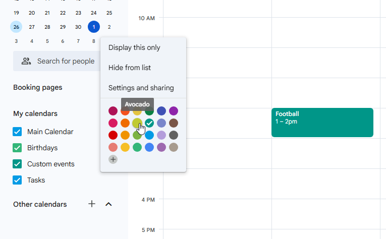
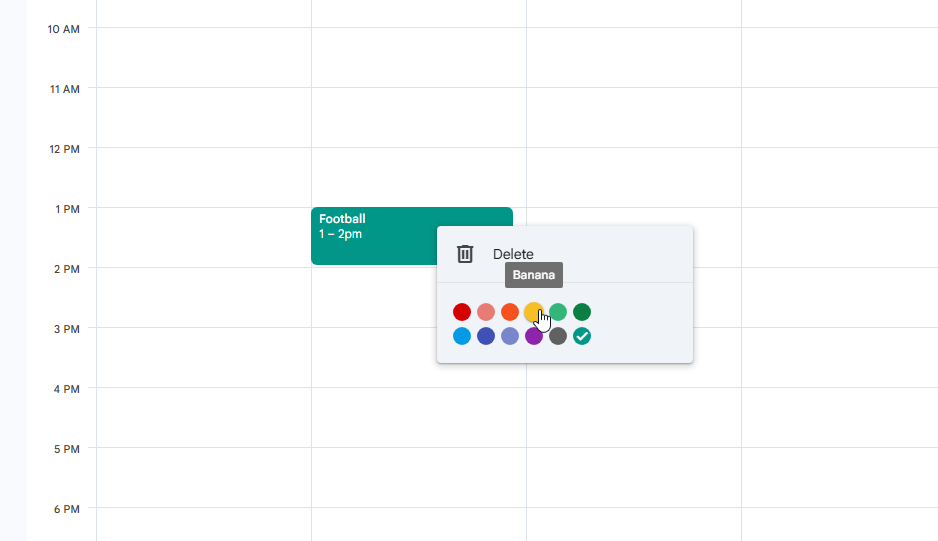

Guide
How to Change Colors on Google Calendar
If you are searching for how to change colors on Google Calendar, start with built-in options first. Google Calendar lets you change the default color of an entire calendar, change event color for a single event, and use appearance settings that affect how colors look. On desktop, you can also use a custom color Google Calendar option for calendar-level color coding.
The exact workflow can differ between Google Calendar colors on desktop, Google Calendar colors on Android, and Google Calendar colors on iPhone or iPad. In this guide, you will get practical steps for each case, plus an optional path for people who need more colors for Google Calendar and separate Google Calendar text color control.
Quick answer: how to change colors on Google Calendar
- To change the color of an entire calendar on desktop, open Google Calendar, find the calendar under "My calendars," open the three-dot menu, and choose a color.
- To add a custom color for a calendar on desktop, use the plus icon or custom color option in that calendar color menu.
- To change the color of one event, open or right-click the event and choose a different Google Calendar event color when available.
- To use labels, apply Google Calendar color labels if your account includes that feature.
- To get more color options and faster reuse, use Tint Calendar as an optional extension.
Note: Google Calendar color behavior can differ by device, account type, and permissions, especially between personal accounts and work or school accounts.
Change the color of an entire calendar on desktop
This method changes the default color for events in that calendar. It is the most reliable built-in way to change calendar color in Google Calendar when you manage multiple calendars such as Work, Personal, Family, Training, or Study.
- Open Google Calendar on your computer.
- In the left sidebar, find "My calendars."
- Hover over the calendar you want to change.
- Click the three-dot menu next to that calendar name.
- Choose one of the available colors in the Google Calendar color palette.
- To use a custom color, click the plus or custom color option if available.
- Apply the color and close the menu.
Existing events usually use this calendar color unless an event has its own event-level override. For example, you can set Work to blue, Personal to green, Family to purple, and Training to orange for fast visual scanning.

Change the color of a single event
Changing calendar color and changing event color are different tasks. Calendar color is the default for a whole calendar. Event color is an override for one event. Use event-level color changes when a deadline, interview, call, or travel block should stand out without changing the full calendar.
Change event color on desktop
- Open Google Calendar on desktop.
- Click the event you want to recolor.
- Open event details or right-click the event if that menu is available.
- Find the event color selector.
- Choose a new color.
- Save the event if Google Calendar prompts you to save.
If the event belongs to a shared calendar or invite, available colors can depend on your permissions. If color code Google Calendar changes keep reverting, the event may be inheriting calendar defaults, syncing from another source, or restricted by account policy.
Change event color on Android
- Open the Google Calendar app.
- Tap the event you want to edit.
- Tap the edit pencil icon.
- Look for an event color or color label field.
- Choose the available color or label.
- Save the event.
Mobile controls can be more limited than desktop. Some custom colors or labels may need to be created first on desktop, then selected on Android.
Change event color on iPhone and iPad
- Open the Google Calendar app on iPhone or iPad.
- Open the event.
- Tap Edit.
- Look for the color or color label field.
- Select the available option.
- Save the event.
Google Calendar colors on iPhone and iPad do not always match desktop options one-to-one. If you cannot find a needed setting, check the same event on desktop.

Calendar color vs event color: what is the difference?
| Color type | What it changes | Best for | Where to change it |
|---|---|---|---|
| Calendar color | Default color for all events in one calendar | Separating Work, Personal, Family, and other calendars | Desktop calendar list or calendar settings |
| Event color | One specific event override | Highlighting deadlines, calls, workouts, or travel | Event menu or event edit screen |
| Color label | Named category label tied to event color | Tracking activity types and reporting categories | Event details on supported accounts |
| Appearance color set | How event colors are displayed visually | Improving readability and visual contrast | Appearance settings on desktop |
Change event color set and density in Google Calendar
Google Calendar also includes appearance options that can change how colors look without creating new unlimited colors. Depending on your account and rollout, you may see event color set options such as modern or classic, plus density controls.
- Open Google Calendar on desktop.
- Click Settings.
- Open Appearance.
- Choose the event color set if the option is available.
- Adjust density to responsive or compact if needed.
This is useful when your Google Calendar event color palette appears too soft, too bold, or harder to read in your current theme.
Use color labels in Google Calendar
Google Calendar color labels are different from plain visual colors. Labels add a named category so you can track event types with both text and color, not color alone. This can be useful for teams and for Time Insights workflows on supported accounts.
Availability is account-dependent. Some labels must be created on desktop before they appear in mobile apps.
When color labels are useful
- Deep work
- Meetings
- Admin tasks
- Interviews
- Training
- Personal time
- Travel
- Deadlines
How to apply color labels
- Open or create an event.
- Edit the event.
- Find the color label option if available.
- Select a label.
- Save the event.
If color labels are missing, your account may not support them, or they may need to be configured first on desktop.
What Google Calendar cannot do natively
Built-in tools are good for basic color coding, but some limits show up in advanced workflows:
- The default Google Calendar color palette for events is still limited for heavy visual planning.
- Google Calendar text color control is limited in standard workflows.
- Custom color options are not equally convenient across desktop and mobile.
- Mobile apps can hide or simplify color tools that are visible on desktop.
- Managing many categories with only built-in controls can become messy.
- Google Calendar UI updates can change where options appear over time.
How to add more colors to Google Calendar with Tint Calendar
If built-in options already solve your workflow, you do not need anything else. If you need Google Calendar custom colors beyond the default flow, faster reuse, or separate text color control, Tint Calendar can help.
Tint Calendar is an optional, lightweight browser extension that works directly inside Google Calendar on desktop. It adds more flexible custom color workflows, including separate background and text color behavior for events.

Tint Calendar is an independent browser extension and is not affiliated with Google.
When Tint Calendar makes sense
- You want more than the default Google Calendar color palette.
- You want to reuse custom colors faster.
- You want better contrast between event background and event text.
- You want to make dense schedules easier to scan.
- You mostly use Google Calendar in a desktop browser.
Built-in Google Calendar colors vs Tint Calendar
| Feature | Built-in Google Calendar | Tint Calendar |
|---|---|---|
| Change calendar color | Yes | Works alongside built-in colors |
| Change individual event color | Yes | Adds more flexible color options |
| Add custom colors | Limited, mainly desktop | More convenient custom color workflow |
| Change event text color | Very limited | Yes |
| Works on Android or iPhone app | Yes, with limitations | No, desktop browser extension only |
| Requires extension | No | Yes |
| Best for | Basic color coding | More advanced visual customization |

Privacy and compatibility note
Tint Calendar is designed to improve the Google Calendar interface in your browser. Because Google Calendar can change its layout over time, some extension behaviors may need updates after major UI changes.
For current data handling details, read the privacy policy.
You can also see how Tint Calendar works and review real screenshots before deciding.
Troubleshooting: why cannot I change colors in Google Calendar?
I cannot find the custom color option
- Try desktop Google Calendar first.
- Check the calendar list in the left sidebar under "My calendars."
- Make sure you are editing calendar color, not only event color.
- Some mobile views do not expose full custom color controls.
My event color keeps changing back
- The event may still inherit the calendar default.
- The event may belong to a shared calendar or invite with restricted controls.
- Permissions can block overrides.
- Sync delays can temporarily revert colors.
- Try changing it again from desktop.
I do not see color labels
- Color labels are not enabled for every account type.
- Some labels must be created from desktop first.
- Not all Google Calendar contexts show labels.
Colors look different on desktop and mobile
- Apps and browsers can render colors slightly differently.
- Appearance settings can shift contrast and emphasis.
- Light and dark themes may display the same color differently.
Can I change Google Calendar text color?
Built-in controls for Google Calendar text color are limited. If separate text color customization is a core need, you can install Tint Calendar from the Chrome Web Store for desktop browser use.
For official behavior changes and account-specific updates, check the Google Calendar Help Center.
FAQ
Can I change colors on Google Calendar?
Yes. You can change the color of an entire calendar, change the color of individual events, and adjust some appearance settings. Some options depend on device and account type.
How do I change the color of a calendar in Google Calendar?
On desktop, open Google Calendar, hover over a calendar in the left sidebar, click the three-dot menu, and choose a color. If available, use the custom color option.
How do I change the color of one event in Google Calendar?
Open the event, edit it, and choose a different event color or color label if the option is available.
Can I add custom colors to Google Calendar?
Google Calendar supports some custom color options, especially for calendars on desktop. For more flexible custom colors and text color control, you can use a browser extension such as Tint Calendar.
Can I change Google Calendar colors on Android?
Yes, but mobile options may be more limited. Open the event or calendar settings in the Google Calendar app and look for color or label options. Some custom settings may need to be created on desktop.
Can I change Google Calendar colors on iPhone or iPad?
Yes, but the available options may differ from desktop. Open the event, tap Edit, and check whether color or label options are available.
Why do my Google Calendar colors look different?
Colors can look different because of device rendering, app version, dark mode, light mode, appearance settings, or Google Calendar UI updates.
Is Tint Calendar affiliated with Google?
No. Tint Calendar is an independent browser extension and is not affiliated with Google.
Does Tint Calendar work on mobile?
No. Tint Calendar is a browser extension and is intended for desktop browser usage.
When should I use Tint Calendar instead of built-in Google Calendar colors?
Use the built-in settings for basic calendar and event colors. Use Tint Calendar if you need more custom colors, faster color selection, or separate text color customization.
Final note
If the built-in Google Calendar palette is enough, you can stop here. If you want more custom colors, faster color selection, and better text contrast in desktop Google Calendar, Tint Calendar gives you an optional upgrade path.